Indroduction
This section is a work in progress. Not all pictures will be of the current design and may contain different colors. As this effort completes, there should be a uniform presentation from beginning to end.
Processor Panel
The processor panel houses the power regulator for the processor and handles cabling between the battery and processor.
The following parts are used for construction:
| Quantity | Part | Notes |
|---|---|---|
| 1 | 3D printed Power Panel | |
| 1 | Battery to Switch Cable | Constructed in previous section |
| 1 | Switch to regulator cable | Constructed in previous section |
| 1 | Power Regulator | Drok Buck Converter 180080 |
| 2 | Switch caps | Included with power regulator module |
| 1 | Power Switch | Rocker Switch 20A 125V |
| 4 | M2.5 x 8 mm self tapping screws |
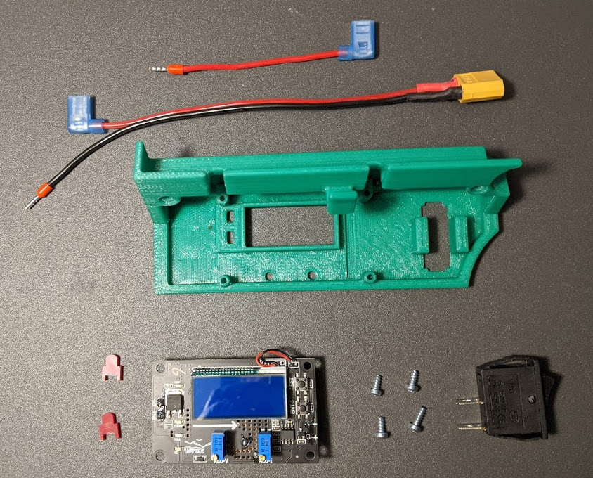
- On the 3D printed part, clean out the four regulator board mounting holes with a 5/64" drill bit.
- Clean out the two panel mounting holes with a 1/8" bit.
- Place the switch Caps in the rectangular mounting holes in the panel.
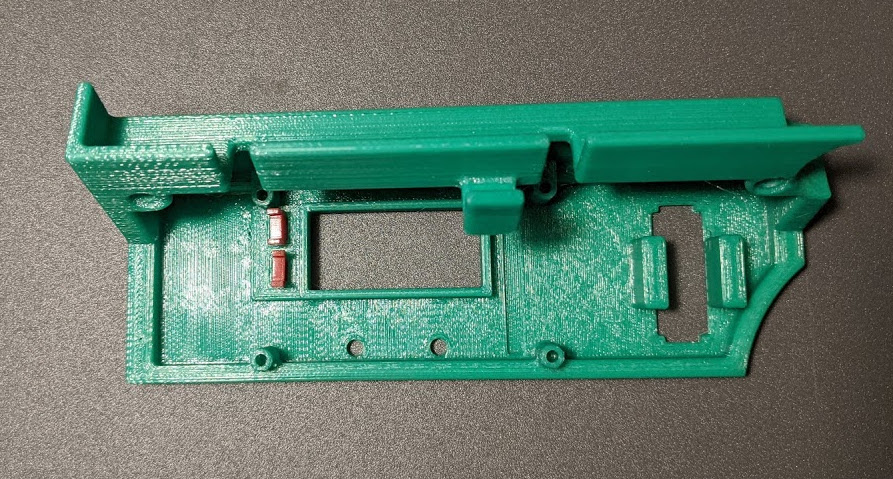
- Mount the regulator to the panel with four 3M x 5 mm screws.
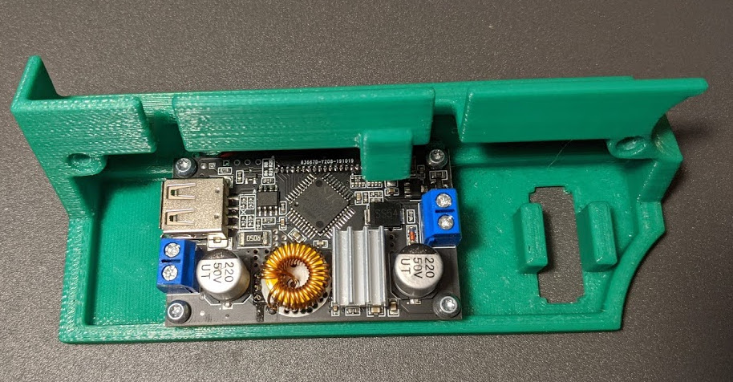
- Connect the ground lead of the battery to switch cable to the negative input terminal on the regulator as shown.
- Connect the Switch to Regulator cable to the positive input terminal as shown.
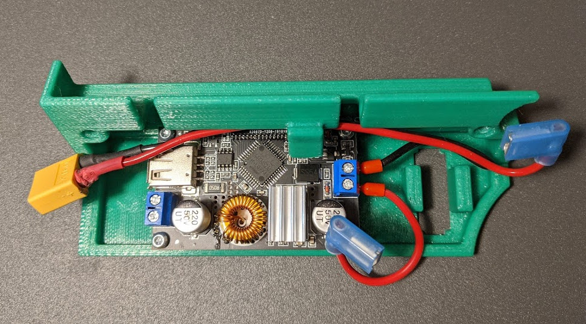
- Mount the power switch in the panel.
- Connect the cables as shown.
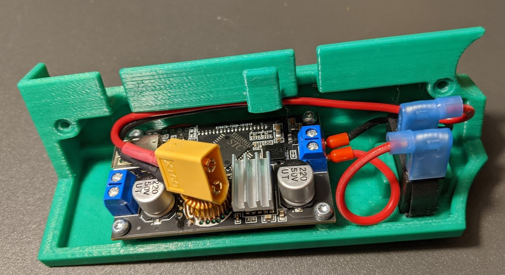
Connecting Processor Panel to Base
| Quantity | Part | Notes |
|---|---|---|
| 1 | 3D Printed Base Plate | |
| 1 | Assembled Processor Panel | |
| 2 | M3 x 24 mm screws | |
| 2 | M3 nyloc nuts |
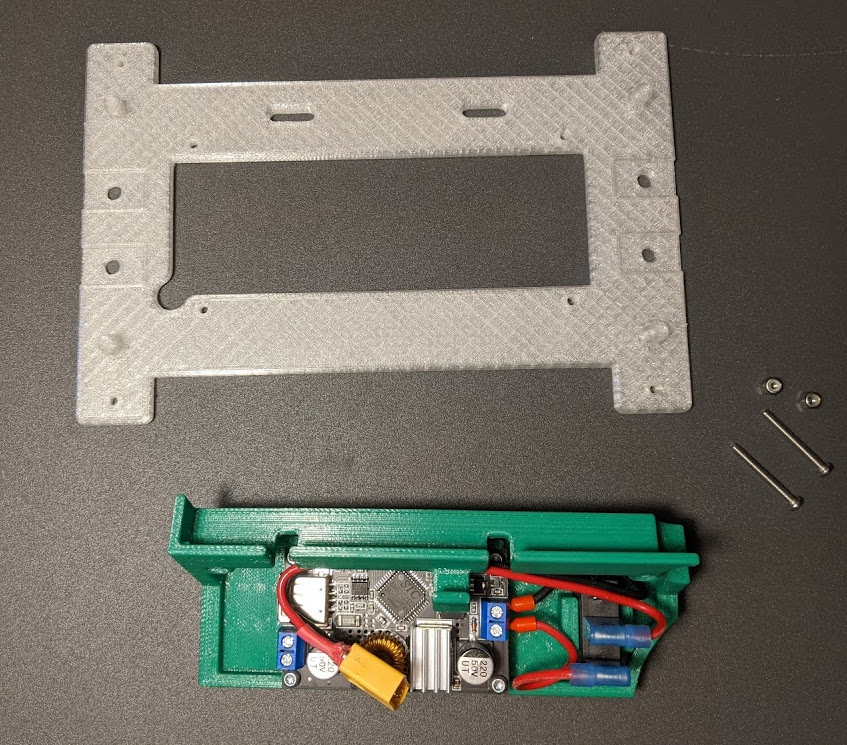
- Clean out the eight small mounting holes in the base plate with a 1/8" drill bit.
- Connect processor panel to base plate with two M3 x 24 mm screws and nuts.
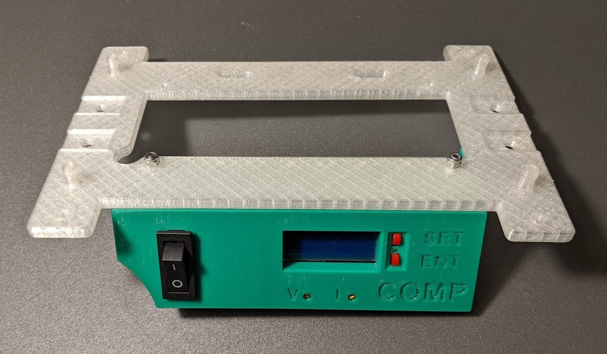
Drive System Panel
| Quantity | Part | Notes |
|---|---|---|
| 1 | 3D printed Drive System Panel | |
| 1 | Power Cable | Constructed in previous section |
| 1 | PWM Control Cable | Constructed in previous section |
| 1 | Panel Voltmeter | Adafruit mini 2-wire voltmeter as prepared in previous section |
| 1 | PWM Servo Controller | PCA9685 12 Bit Servo Driver |
| 1 | Power Switch | Rocker Switch 20A 125V |
| 4 | M2.5 x 8 mm self tapping screws | |
| 2 | M2 x 5 mm self tapping screws |
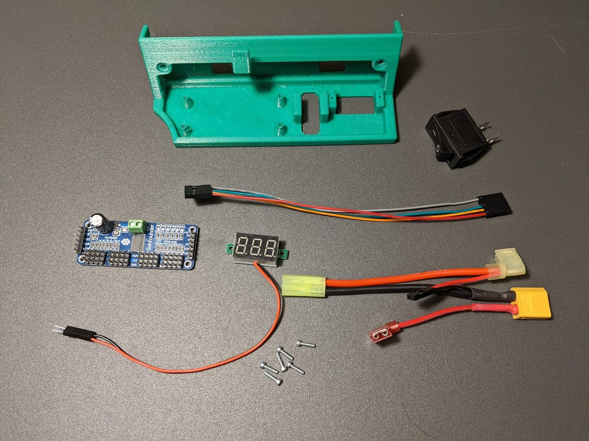
- Clean out the four PWM module mounting holes in the Drive System Panel with a 5/64" bit.
- Clean out the two voltmeter mounting holes in the Drive System Panel with a 1/16" bit.
- Mount the servo controller as shown with four M2.5 x 8 mm screws.
- Mount the voltmeter with two M2 x 5 mm screws.
- Insert the power switch as shown.
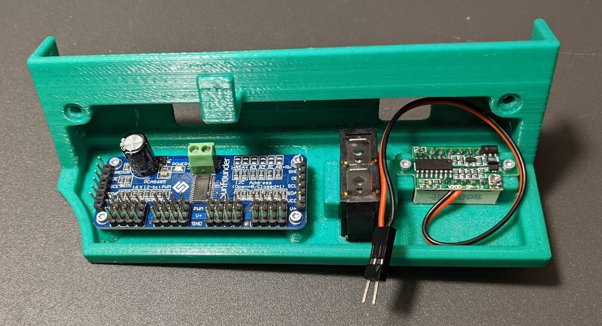
- Connect the PWM Control Cable as shown. The side with the gap between the wires goes to the top of the connector on the PWM board (gnd).
- Connect the power cable to the power switch and voltmeter as shown.
- Push on the connector to bend the lugs on teh power switch upwards. This will provide proper clearance between the power switch and the car motor.
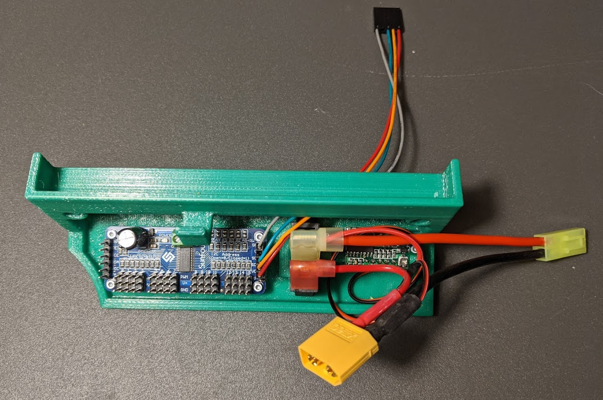
Connecting Drive System Panel to Base
| Quantity | Part | Notes |
|---|---|---|
| 1 | 3D Printed Base Plate | |
| 1 | Assembled Drive System Panel | |
| 2 | M3 x 24 mm screws | |
| 2 | M3 nyloc nuts |
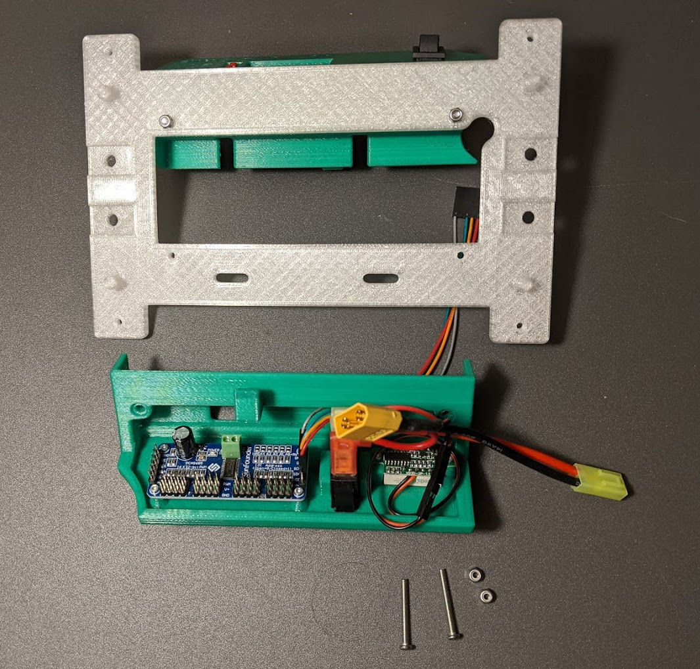
- Route the PWM Cable through the base slot as shown.
- Connect Drive System panel to base plate with two M3 x 24 mm screws and nuts.
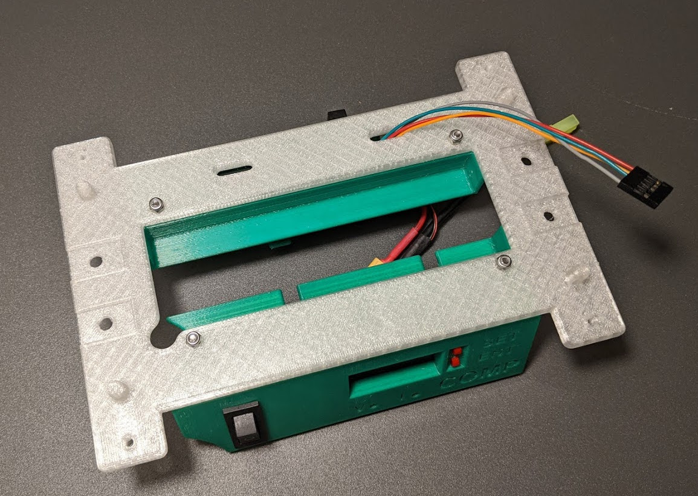
Processor Mount Plate Attachment
- Clean out processor mounting hole on processor mounting plate with 5/64" drill bit.
- Place the Processor Mounting Plate on top as shown to enclose the battery.
- Secure with 4 bent clip pins.
5V Barrell Cable Attachment
| Quantity | Part | Notes |
|---|---|---|
| 1 | 3D Printed Assembly | |
| 1 | Assembled 5V Power Cable | |
| 1 | 5V Extension Cable |
- Insert straight round end into the large round hole in the top of the chassis.
- Screw the ferrules on the end of the assembled 5V power cable into the output of the regulator.
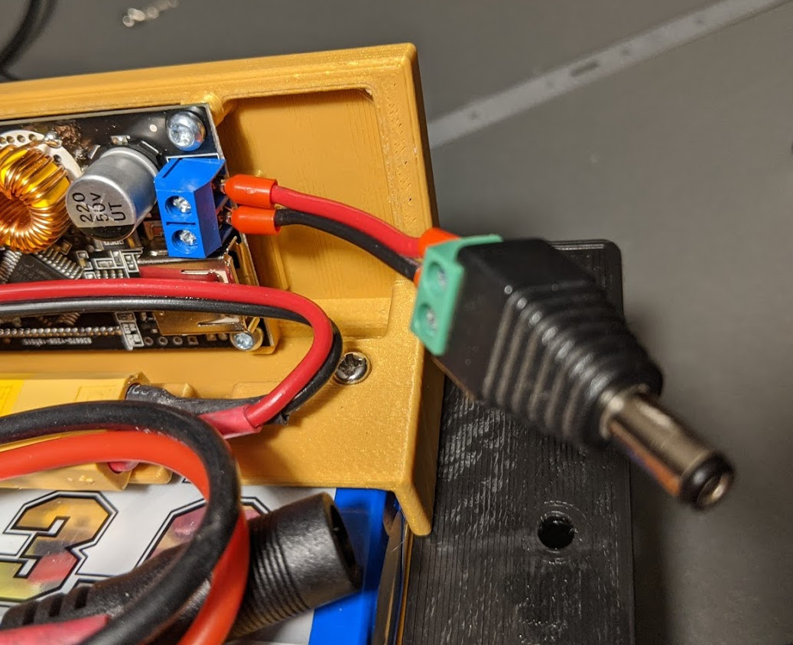
- Plug the barrell jack on the other end into the extension cable
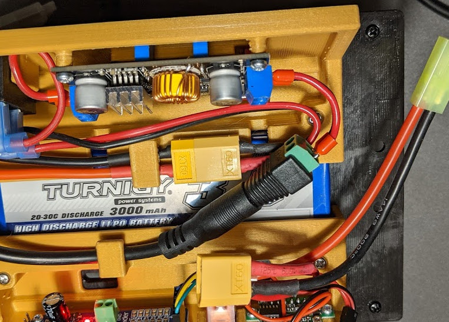